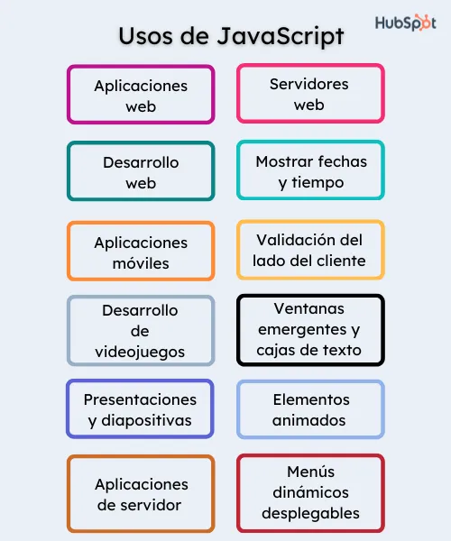

JavaScript (abreviado comúnmente JS) es un lenguaje de programación interpretado, dialecto del estándar ECMAScript. Se define como orientado a objetos, basado en prototipos, imperativo, débilmente tipado y dinámico. Se utiliza principalmente del lado del cliente.
Este lenguaje de programacion tiene diferentes usos dentro del desarrollo web como lo son:
Este lenguaje se puede codificar de dos formas: en la etiqueta "script" dentro del archvio html y de la otra forma es un archivo externo con formato ",js"